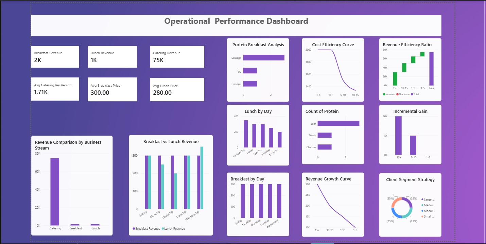
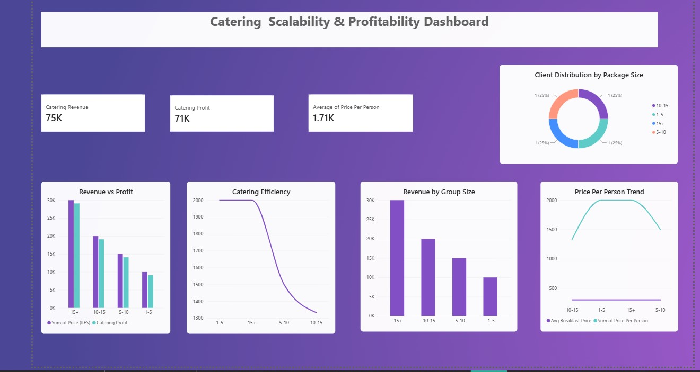
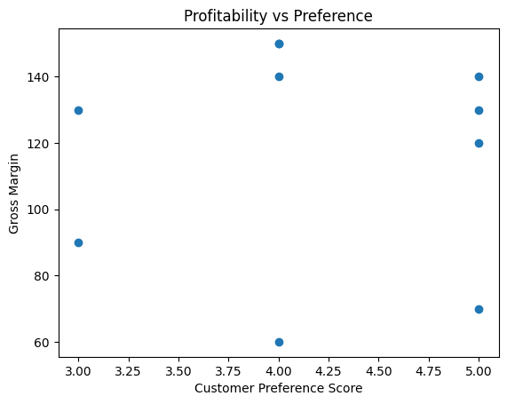
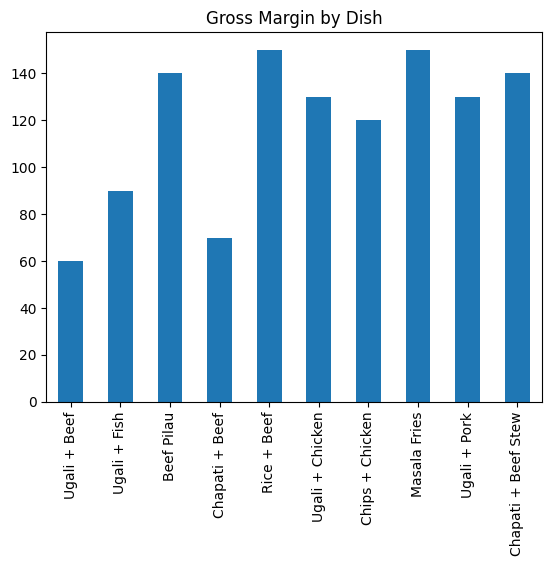
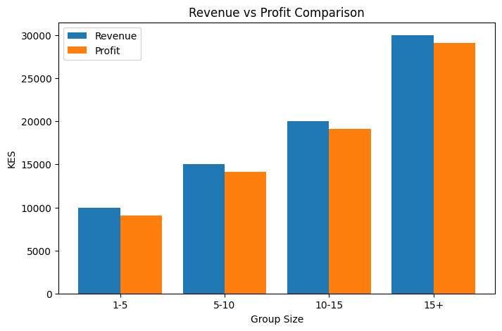
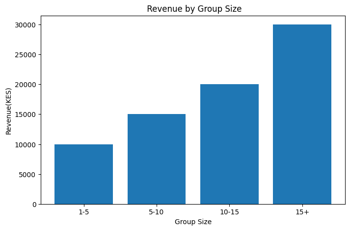
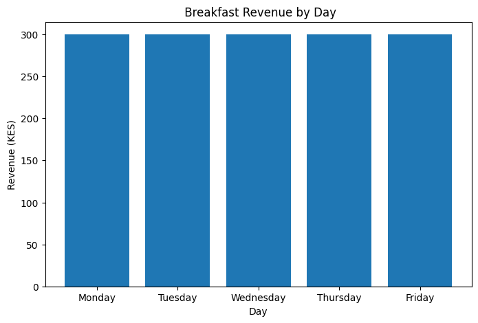
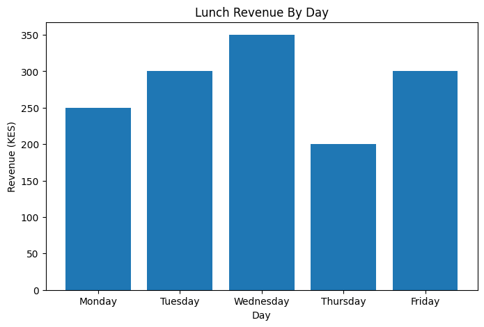

Executive Overview
This Business Intelligence project evaluates the operational and financial performance of a multi-stream food business across breakfast, lunch, and catering services. Using Power BI, Python, and Microsoft Excel, the analysis transforms operational data into interactive dashboards that evaluate profitability, pricing, customer purchasing behavior, product performance, and business scalability.
Business Problem
Growing businesses generate large volumes of operational and sales data, yet transforming that information into actionable business insights remains a significant challenge. Without centralized reporting, it becomes difficult to understand profitability, customer purchasing patterns, pricing performance, and the contribution of different revenue streams. This project addresses that challenge by developing an end-to-end Business Intelligence solution that transforms raw business data into executive dashboards, enabling informed decisions that improve profitability, operational performance, and long-term business scalability.
Project Objectives
Methodology
The project followed a structured Business Intelligence workflow that combined spreadsheet preparation, exploratory analysis and interactive dashboard development to evaluate performance across breakfast, lunch and catering revenue streams.
Data Collection
Collected transactional sales and operational data covering breakfast, lunch, and catering services.
Data Preparation
Cleaned, standardized, validated, and transformed datasets using Microsoft Excel and Python to prepare data for analysis.
Exploratory Data Analysis
Performed exploratory analysis to identify trends, customer behavior, profitability patterns, pricing performance, and operational insights.
Business Intelligence Development
Designed interactive Power BI dashboards that transform operational data into executive-level visual reports.
Insight Generation
Generated business insights and recommendations to improve profitability, pricing strategies, customer engagement, and long-term scalability.
Technology Stack
Dashboard Preview
Interactive Power BI dashboards evaluating profitability, operational performance and catering scalability across the business.


Python Analysis Highlights
Supporting exploratory analysis and profitability breakdowns from the Python notebooks behind the dashboards.






Key Insights
Catering Performance
Catering was the strongest growth engine, with profit scaling from KES 9,100 on the smallest group tier (1–5 people) to KES 29,100 on the largest (15+ people) — an average package value of KES 18,750.
Breakfast Consistency
Breakfast held a flat KES 300 price across every day of the week with zero price variance, generating a steady ~KES 180 profit per day and KES 900 in weekly profit — the business's most dependable cash flow stream.
Lunch Profitability Swing
Lunch prices ranged from KES 200 to KES 350 (average KES 280), with profit varying 4x by day — Wednesday's Pasta + Minced Meat was the most profitable at KES 200, versus Thursday's Chapati + Beans at just KES 50.
Menu-Level Margins
Across the 10 core menu dishes, gross margin averaged 48.4% (range 36%–60%). Beef-based dishes — Rice + Beef, Chapati + Beef and Beef Pilau — were consistently the strongest margin performers, with Rice + Beef topping the list at a 60% margin.
Product Retention
The menu held a 90% retention rate: of 10 dishes tracked, only Ugali + Chicken was discontinued, dropped due to low demand and rising protein costs.
Operational Visibility
Interactive dashboards significantly improved visibility into operational performance and supported faster, data-driven decision-making.
Project Outcomes
Strategic Recommendations
1. Expand Catering Services
Expand high-performing catering services to maximize revenue growth.
2. Optimize Pricing Strategy
Optimize pricing strategies for products with lower profit margins.
3. Focus on High-Value Customers
Focus marketing efforts on high-value customer segments.
4. Continuous Performance Monitoring
Continuously monitor business performance using interactive Business Intelligence dashboards.
5. Support Strategic Planning
Use Business Intelligence reporting to support future operational planning and business expansion.
Project Conclusion
This project demonstrates how Business Intelligence transforms operational and sales data into actionable insights that improve profitability, pricing strategy, operational efficiency, and business growth. By integrating Power BI dashboards with Python-based analysis, business leaders gain a comprehensive view of performance across multiple revenue streams, enabling faster, evidence-based decision-making.
Project Resources
This case study demonstrates the application of Business Intelligence, Power BI, Python and Microsoft Excel to evaluate multi-stream business performance and support data-driven decision-making.